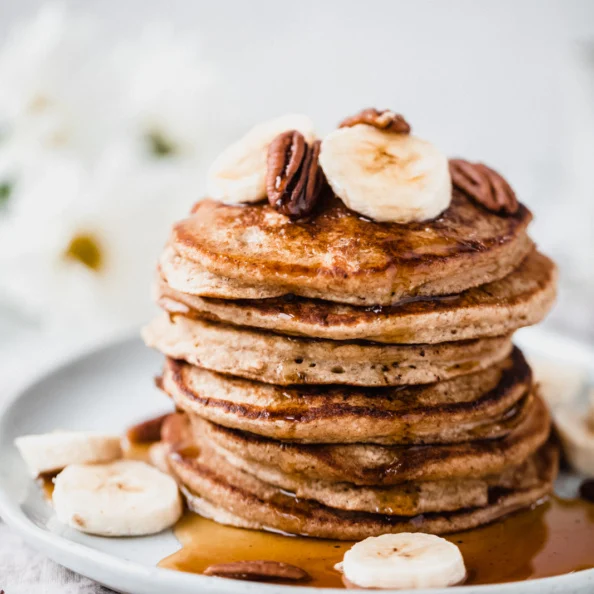

Banana Oatmeal Pancake Recipe

A recipe to make delicious pancakes in a blender. These fluffy healthy pancakes are naturally gluten free, dairy free, and contain no flour or added sugar. These gluten free banana pancakes are easy to make, SO delicious and happen to be an awesome post-workout breakfast because they’re packed with healthy complex carbs and 12g protein per serving.
Here’s what you’ll need to make them:
Ingredients
- 2 medium ripe bananas
- 2 eggs
- 1/2 cup unsweetened almond milk
- 1 1/2 cups old fashioned rolled oats, gluten free if desired
- 2 teaspoons baking powder
- 1/2 teaspoon ground cinammon
- 1/4 teaspoon salt
- 1 teaspoon vanilla extract
- Olive oil, for cooking
Instructions
- Add all of the ingredients to a blender and blend on high until completely smooth, about 30 seconds to 1 minute. Let the batter sit in your blender while you heat your pan up.
- Lightly coat a griddle with coconut oil, vegan butter or olive oil and place over medium heat. Once pan is hot, add 1/3 cup of the batter to the griddle for each pancake and cook for 2-4 minutes until pancakes slightly puff up and you see a few bubbles along the edges.
- Flip cakes and cook until golden brown on underside. If you find that pancakes are browning too quickly then you need to lower the heat. I normally start on medium heat, then decrease to medium low later so that my pancakes don't burn. If at any point your griddle starts smoking, it means your pan is too hot.
- Wipe skillet clean and repeat with more oil and remaining batter. Makes 9 pancakes total. Serves 3, 3 pancakes each.